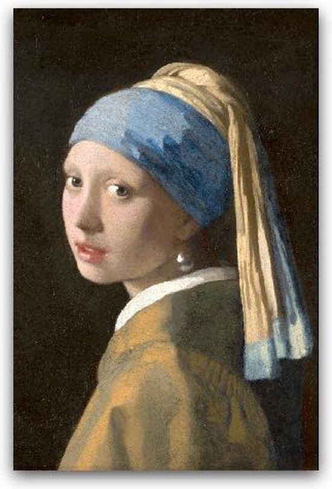
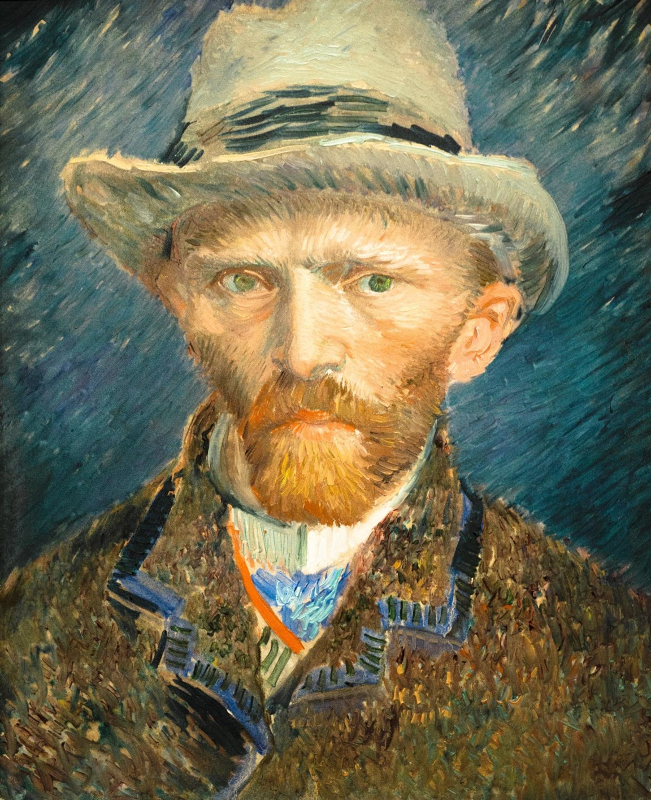

Collections
- 
-

- 
-

-

-


History
On November 19, 1798, the government decided to set up a national museum following the French example. A prestige project to stimulate the love for the country but also to preserve important objects. On May 31, 1800, this National Art Gallery opened its doors for the first time in Huis Ten Bosch in The Hague. With over 200 paintings and historical objects, partly from the stadholder's collections and partly from (discontinued) national institutions, such as the VOC. The first purchase, De Zwaan by Jan Asselijn. cost 100 guilders and is still one of the highlights of the Rijksmuseum. Today we have become one of the most famous museums in all of Europe. Source
About us
The Rijksmuseum is the museum of the Netherlands. We tell the story of 800 years of Dutch history from 1200 to the present. In addition, we organize several exhibitions a year from our own collection and with (inter)national loans. In the Rijksmuseum you get to know the greatest works of art down to the smallest detail. You can also know everything about ourselves. Why do we do what we do? And how sustainable are we working? About 750 people work behind and in front of the scenes from all kinds of different backgrounds and functions. From restoration to security and from marketing to the Information Desk. The management is in the hands of a three-person management and the Supervisory Board. You will meet this one here.
Reviews
“It is wonderful that you can view many paintings in the Rijksmuseum by painters we have had in the past.”
- Jaap Steen
“Rijksmuseum with exhibition about Rembrandt. Hadn't been here after the refurbishment. Turned out very beautiful. Exhibition was also interesting.”
- Bionda Dunnewijk
“Varied, fun guidance, beautiful, and authentic!”
- Jacobien Visser
“The Rijksmuseum is a must for super fun art, top museum.”
- Barbara Anderson